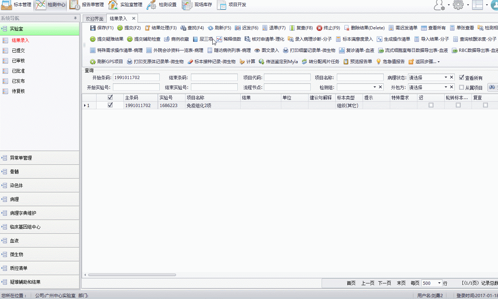
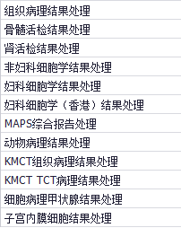
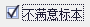
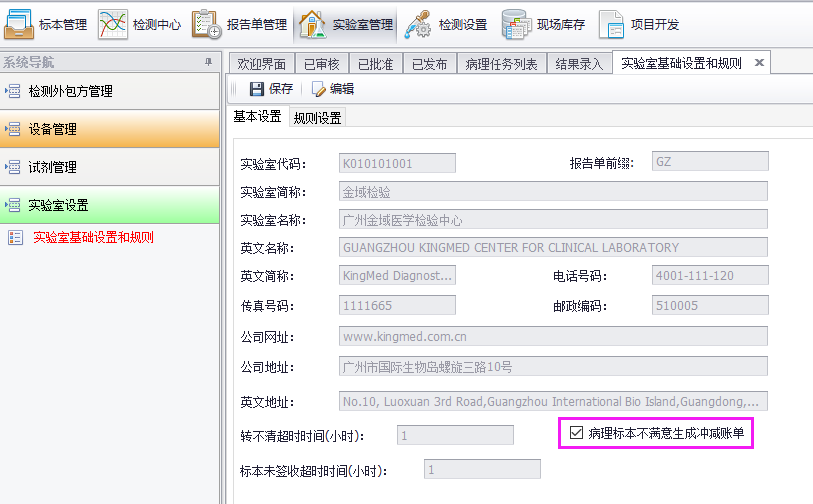
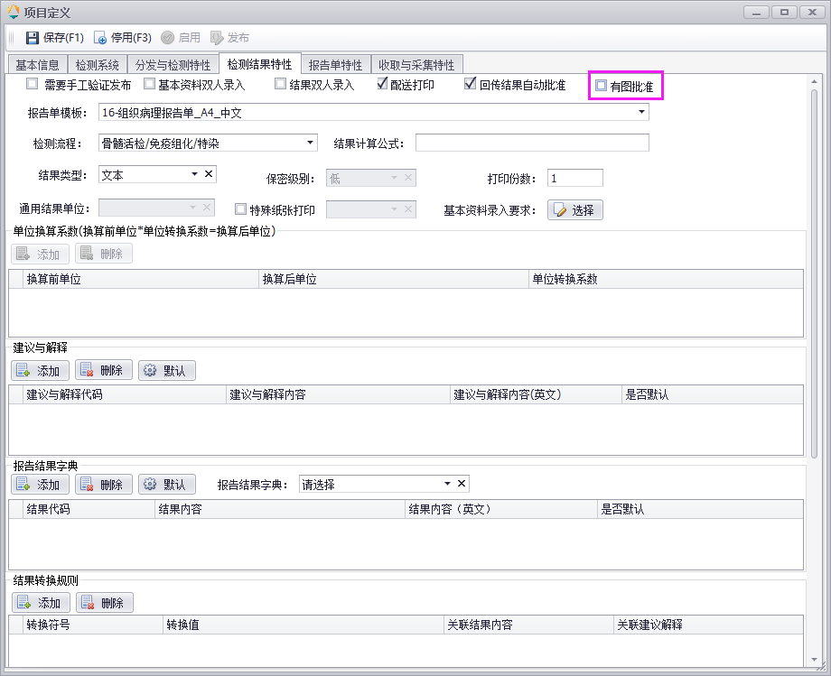
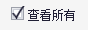
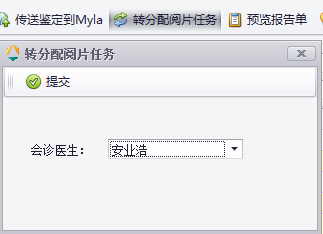

常规报告发布
流程简介
指数据从结果录入-》已提交-》已审核-》已批准-》已发布的整个过程。
流程演示
01.主线流程

重要功能点
1.病理
现有11个结果处理界面
。界面各不相同，差异较大。

==================================================
2.禁止在非特殊结果处理界面录入结果！
==================================================
3.可以批量提交、审核结果。
==================================================
4.图文录入为通用功能。正常采集或者添加图片可自动保存，拖动排序需手动保存。
==================================================
5.
细胞病理结果处理
界面的，可以在如下界面设置不满意标本是否收费。
==================================================
6.病理项目设置可以设置限制批准时是否采图。
 ==================================================
7.需要查看未分配给自己的病例，需要勾选。
==================================================
8.转分配阅片任务可以将分配给某人的任务重新分配给其他人。

特殊逻辑
无。